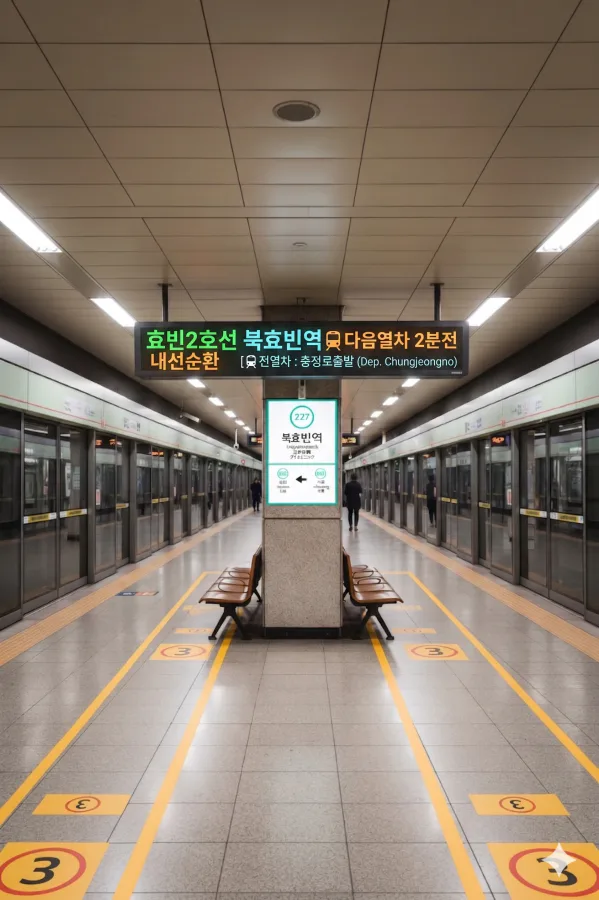
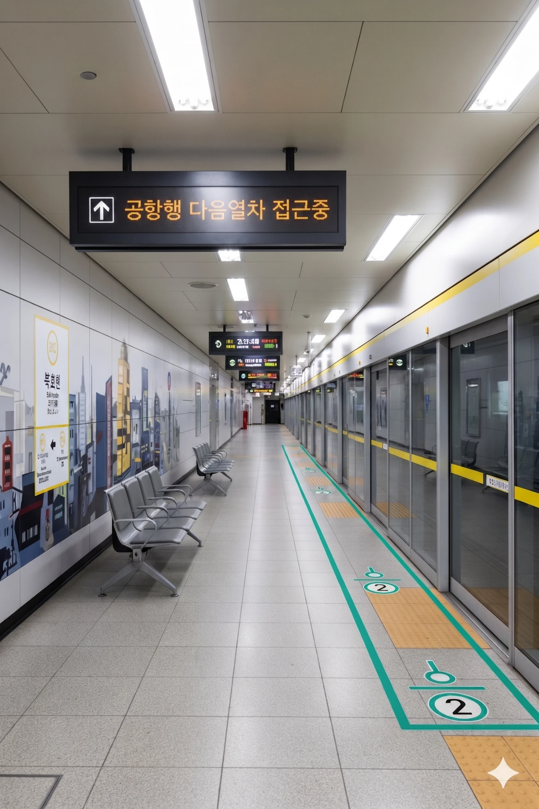

효빈 도시철도 2호선 227번 및 3호선 312번. 효빈광역시 북구 청능동 3711지하에 위치해 있다. 북구의 교통 요지로, 효빈교육대학교가 인근에 있다.
| 번호 | 주요 시설 및 방향 | 비고 |
|---|---|---|
| 1 | 효빈교육대학교 | |
| 2 | 홈플러스 청능점, 청능초등학교 | |
| 3 | 2-3호선 환승통로 | |
| 4 | 2-3호선 환승통로 | |
| 5 | 북효빈역(일반열차) 연결통로 | 강빈선 이용 |
| 6 | 효빈교대 | |
※ 복선 섬식 승강장 (지하 3층)

| 입선 ↑ | |||
| ㅣ | 하행 (내선) | 상행 (외선) | ㅣ |
| ↓ 시청 | |||
| 상행 (외선) | 2 효빈 도시철도 2호선 (완행/급행) | 효빈대학교 · 중앙로 · 월천 방면 (급행 정차) |
| 하행 (내선) | 2 효빈 도시철도 2호선 (완행/급행) | 시청 · 고송교차로 방면 (급행 정차) |
※ 복선 상대식 승강장 (지하 3층)

| 고속버스터미널 ↑ | |||
| 하행 | ㅣ | ㅣ | 상행 |
| ↓ 청능 | |||
| 상행 | 3 효빈 도시철도 3호선 (완행/급행) | 팔조 방면 (급행 정차) |
| 하행 | 3 효빈 도시철도 3호선 (완행/급행) | 효빈국제공항 방면 (급행 정차) |
| 북효빈역 이용객 통계 | ||||
|---|---|---|---|---|
| 연도 | 2 | 3 | 합계 | 비고 |
| 2020년 | 16,692명 | 13,448명 | 30,140명 | |
| 2021년 | 16,878명 | 13,598명 | 30,476명 | |
| 2022년 | 19,626명 | 15,812명 | 35,438명 | |
| 2023년 | 19,971명 | 16,090명 | 36,061명 | |
| 2024년 | 20,322명 | 16,373명 | 36,695명 | |
| 구분 | 정류소명 | 노선 번호 |
|---|---|---|
| 순방향 | 북효빈역 | 24, 25, 20, 143, 242, 522, 3000 |
| 역방향 | 북효빈역(건너편) | 42, 52, 20-1, 413, 422, 252, 3000R |